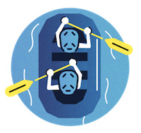

Overview
Purpose
At White Water Rafting, our purpose is to build revenue and establish an engaging online presence that connects adventure enthusiasts with thrilling river rafting experiences. We aim to share information about our company, the beauty of our rafting destinations, and the safety measures we prioritize to ensure an unforgettable and secure adventure. By fostering a platform where we can share our opinions and expertise on river rafting, we seek to inspire and educate individuals about this exhilarating water sport. Furthermore, we are excited to share our personal interests and experiences with our customers, providing a personal touch that creates a sense of community among friends and family who embark on this incredible journey together.
Audience
At White Water Rafting we strive to connect with and reach adventure-seeking individuals, aged 18-45, who are passionate about outdoor activities and are looking to embrace thrilling experiences in nature. They are active, physically fit, and have a desire for adrenaline-filled adventures. Financially, they fall into middle to upper-middle-income brackets, as they are willing to invest in memorable and unique experiences. Our audience wants to break free from their daily routines, immerse themselves in nature's beauty, and challenge themselves physically and mentally. They seek the exhilaration of white water rafting and the sense of accomplishment that comes with conquering the rapids. While our target customers are enthusiastic about river rafting, they often struggle to find a reputable and trustworthy rafting company that provides not only thrilling experiences but also prioritizes safety measures and expert guidance. They desire a website that offers comprehensive information about the rafting trips, the rivers and destinations, safety protocols, and expert advice to ensure a memorable and secure adventure. Considering the active and adventurous nature of our target audience, they are likely to access our website through various devices, including mobile devices such as smartphones and tablets. They may also use desktop or laptop computers for detailed trip planning and research.
Branding
White Water Rafting
Style Guide
Color Palette
Palette URL:
https://coolors.co/396e94-e7c24f-a43312-381d2a-aabd8c| Primary | Secondary | Accent 1 | Accent 2 |
|---|---|---|---|
| #396E94 | #186AD0 | #FC8B0C | #FCC000 |
Typography
Heading Font: Permanent Marker
Paragraph Font: Lato
Normal paragraph example
The best Whitewater Rafting in Colorado, White Water Rafting Company offers rafting on the Colorado and Roaring Fork Rivers in Glenwood Springs. Since 1974, we have been family owned and operated, rafting the Shoshone section of Glenwood Canyon and beyond.
Colored paragraph example
Trips vary from mild and great for families, to trips exclusively for physically fit and experienced rafters. No matter what type of river adventures you are seeking, White Water Rafting Company can make it happen for you.
Navigation
Site Map
Wireframes
Home